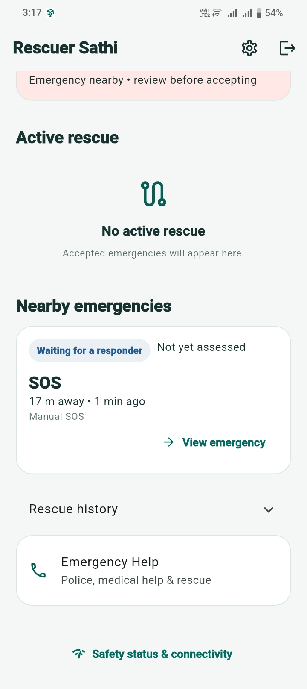
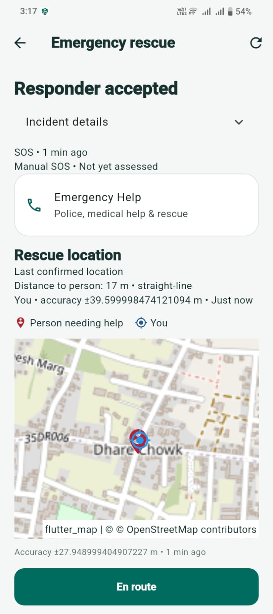
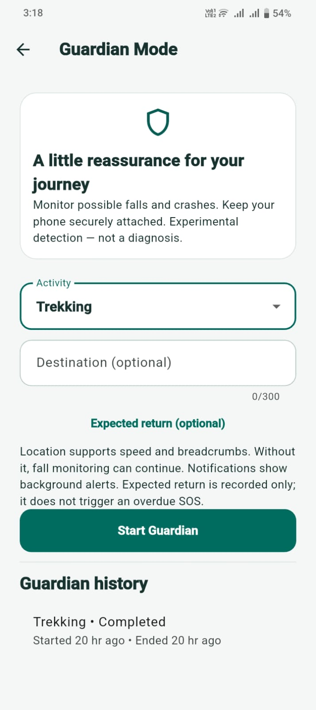

Retaining an SOS through disruption
Persist the encrypted request before transmission. Retry using one incident UUID to reduce duplicate incidents after reconnecting.
Engineering case study
Offline-First Emergency Assistance & Rescue Coordination
An Android emergency-assistance engineering prototype built around durable requests, controlled information sharing, and a verified responder workflow.
View repository ↗ (opens in a new tab)01 / Context
Intermittent connectivity makes it difficult to coordinate assistance. The engineering goal is to retain requests locally, retry delivery, and keep responders informed without treating an offline queue as proof that help has arrived.
02 / System design
Simplified data flow. Each step represents a responsibility, not a guaranteed delivery path.
03 / Implementation
Persist the encrypted request before transmission. Retry using one incident UUID to reduce duplicate incidents after reconnecting.
Nearby devices carry encrypted envelopes through store-and-forward relay. Delivery to another phone is distinct from backend acknowledgement.
Consent-based medical snapshots and assigned-rescuer authorization limit access to sensitive incident information.
Three trained models support injury detection, injury classification, and burn-severity classification. TFLite preprocessing and inference run away from the UI thread; symptoms remain separate from model predictions.
04 / Application walkthrough
Three views captured from the application running on a physical Android phone. Open any image to inspect it at full size.



05 / Evidence & boundaries
Physical-device testing has covered multi-phone relay and measured power behavior. The application screenshots above show the rescuer dashboard, accepted-rescue map, and Guardian Mode on an Android phone. Quantitative battery results and relay test conditions are not published here.
Testing update supplied by the project developer, October 2026. The screenshots illustrate the UI; they do not independently measure relay delivery or battery endurance.
The repository’s historical Phase 1 verification records four backend integration tests, five Flutter tests, a debug Android build, and an emulator authentication-flow test. Later README notes describe focused injury, privacy, maps, and SOS-attachment checks. These records cover specific phases; they do not establish end-to-end validation of every current capability.
Experimental prototype, not a certified rescue service. Delivery and rescue are not guaranteed. Device-specific sensor behavior and wider field conditions remain areas for further validation. Injury predictions have no clinical accuracy validation. Satellite transport is not implemented; labeled previews are simulations.
Publish the completed relay and power-test methodology and measurements, expand regression coverage across Android devices, and continue production security hardening.